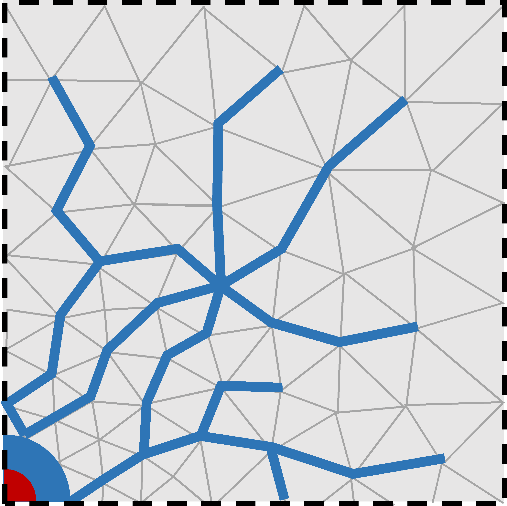
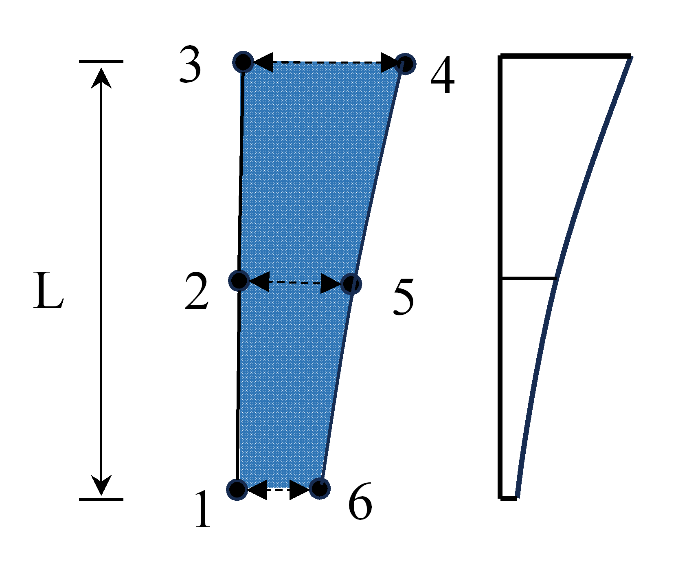
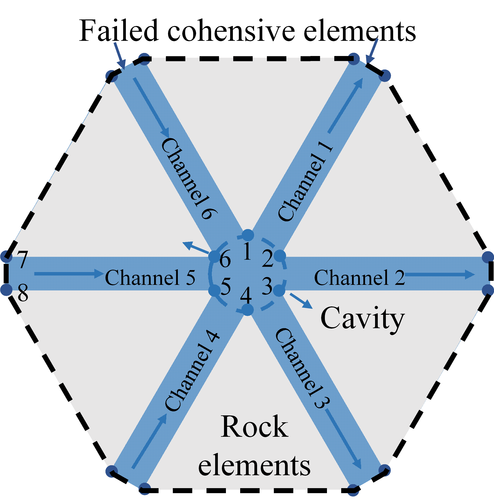

Fracture Fluid#
When subjected to explosive loading, the rock mass experiences the rapid propagation of stress waves radiating outward from the blast hole. As the waves travel and dissipate, radial fractures form, and the blasting gas infiltrates the newly formed cracks, driving their secondary extension and ultimately giving rise to a well-connected fracture network. In OpenFDEM, the fracture geometry provides the flow domain through which the fluid (gas or liquid) travels.
Fracture aperture#
Before rock failure occurs, the fluid is assumed to be unable to penetrate the intact medium. Once the cohesive elements connecting adjacent solid elements exceed their strength limit, they separate and become failed cohesive elements. The intact rock blocks remain impermeable, so the fluid can only flow through these fracture paths. The fracture aperture of each element, which acts as the hydraulic opening, directly controls the fluid volume within the flow domain. The aperture is evaluated using
where \(a_0\) denotes the initial fracture aperture, \(a_{\max}\) and \(a_{\min}\) represent its upper and lower bounds, respectively, and \(o_n\left( n=1,2,3 \right)\) is the aperture obtained from the Gauss points along the adjacent edges shared between the fracture and neighboring solid elements.
Fracture volume#
The fluid volume within each channel is calculated as
where \(N_g\) denotes the shape function of the Gauss point, and \(a\) represents the aperture at a specific Gauss point within a channel. The fluid volume of each cavity is determined by the volumes of the channels connected to it. The total fracture volume of a cavity is obtained by aggregating the nodal fracture volumes of all cohesive elements contained within it
where \(n\) denotes the number of channels connected to the cavity, and \(M\) is half the number of nodes in a single channel.
{kind=link}

Figure 1. Fluid flow through the fracture network formed by failed cohesive elements.#
{kind=link}

Figure 2. Fracture unit opening and channel volume.#
{kind=link}

Figure 3. Schematic of the flow cavity comprising Nodes 1-6.#